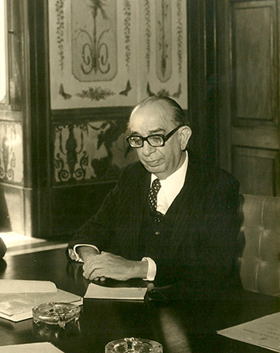

Escola Técnica Oscar Tenório
A Escola Técnica Estadual Oscar Tenório (ETEOT), é uma escola técnica da cidade do Rio de Janeiro mantida pela Fundação de Apoio à Escola Técnica (FAETEC). Oferece cursos técnicos integrados ao ensino médio, assim como técnicos subsequentes. A instituição está localizada no bairro de Marechal Hermes, na zona norte da cidade do Rio de Janeiro, e funciona nos turnos da manhã, tarde e noite, de segunda à sábado.
O campus em que a escola é localizada é um complexo de mais de 40.000m², o CETEP-Marechal Hermes. O campus abriga também a Escola Técnica Estadual Visconde de Mauá, assim como a escola de ensino fundamental EEEF Visconde de Mauá. Não limita-se ao ensino médio técnico, tendo também um núcleo esportivo (CEFE - Centro de Edução Física e Esportes), uma escola de música e um centro de idiomas que oferece inglês, espanhol e francês de forma gratuita.
Quem foi Oscar Tenório
Nascido em Alagoas, formou-se em Direito. Foi promotor público, juiz, desembargador, professor, presidente da Associação dos Magistrados Brasileiros e da União Internacional dos Magistrados, sediada em Túnis, na Tunísia, tendo sido o primeiro jurista de fora da Europa a ocupar esse cargo. De 1967 a 1971 foi vice-reitor da então Universidade do Estado da Guanabara, para a qual foi indicado reitor em 1972.
Pontos Positivos
- Professores Capacitados
- Ensino de Qualidade
- Estrutura Clássica
Cursos
A ETEOT oferece Cursos Técnicos em Administração, Análises Clínicas, Gerência em Saúde e Informática para Internet, nas modalidades: Ensino Médio Integrado (para quem terminou o Ensino Fundamental), e Subsequente (para quem concluiu o Ensino Médio e deseja uma qualificação profissional de nível técnico).